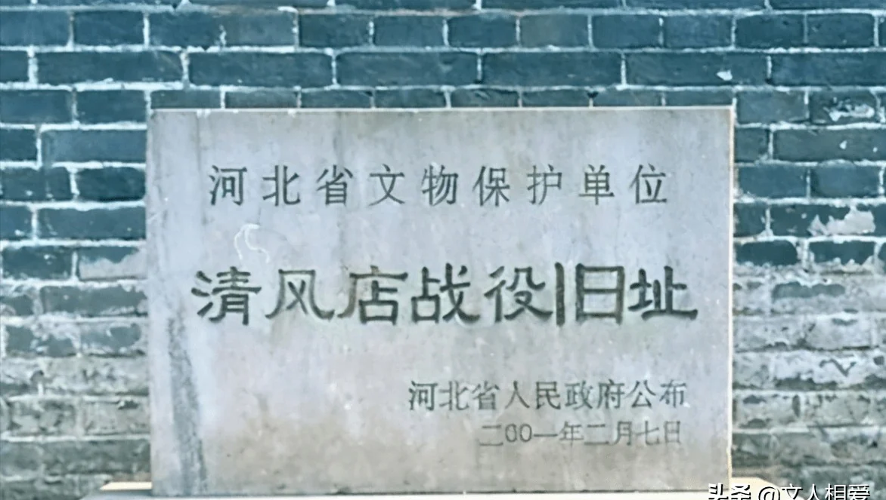
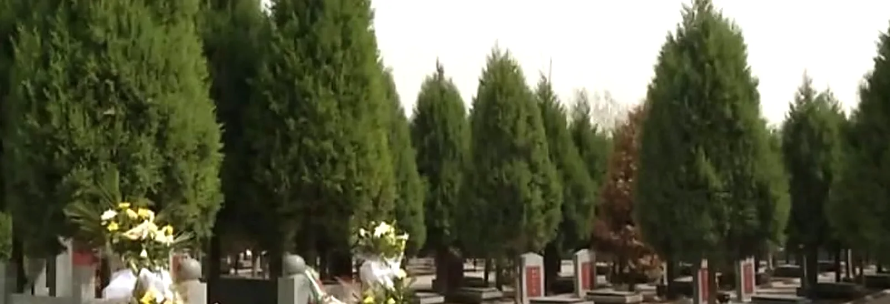
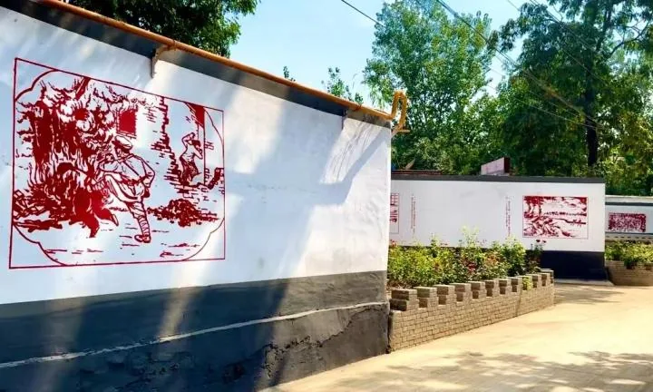
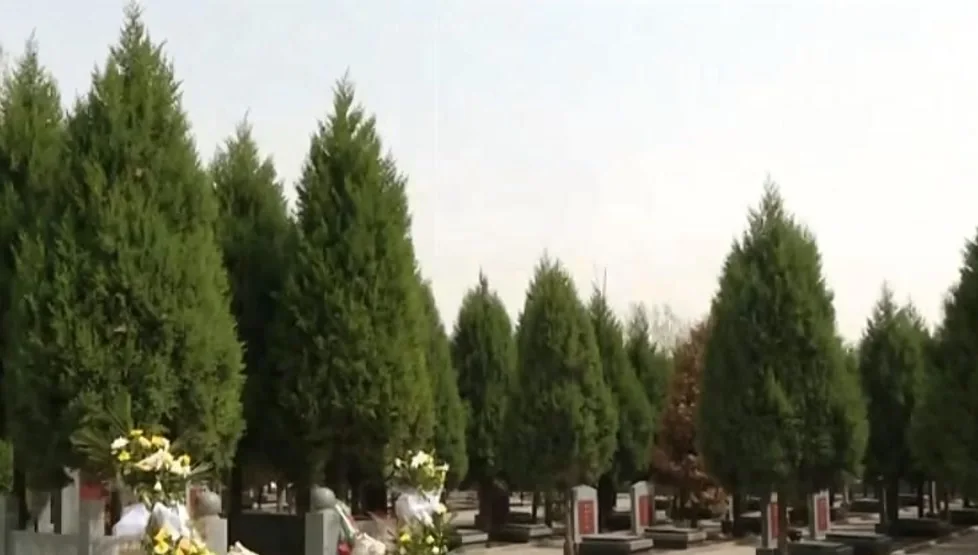
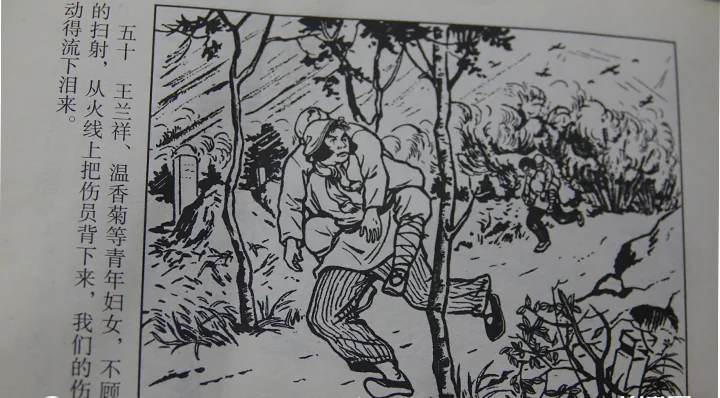

纪念亭
石木结构，六角飞檐，高8.68米、宽5.5米。亭内汉白玉碑正面为聂荣臻元帅题写的“燕赵遗风”，背面刻《清风店大捷记略》。
这是晋察冀野战军转入战略反攻后取得的第一个大胜利。它让华北战场的攻守之势为之一变， 也为石家庄乃至华北的解放创造了有利条件。
驻防石家庄的国民党第三军军长罗历戎，率第七师、第二十二师六十六团及直属部队一万七千余人，由石家庄向北开拔。
晋察冀野战军主力昼夜兼程南下，在冀中人民的支援下急行军二百多里，提前到达指定位置，将北进之敌包围在清风店东北的几个村庄。
战斗于拂晓打响。地方武装、民兵沿唐河北岸埋设地雷，村民主动带路、输送物资、转运伤员，军民合力收紧包围圈。
11时30分，战斗全部结束。第三军军部、第七师及第六十六团被全歼，军长罗历戎被俘，连同阻击作战战果，共歼敌一万七千余人。
1948年9月，为纪念在清风店战役中牺牲的烈士，定县县委、县人民政府决定在战役发生地西南合村兴建烈士陵园。 陵园位于村东，大门坐南朝北，青砖围墙环绕，园内六行柏松七十余株，挺拔苍翠。
陵园占地十四亩，由纪念亭、石牌坊、纪念馆、烈士公墓区和影片放映室五部分组成。 苍松翠柏之间，六角纪念亭静静伫立，亭内汉白玉纪念碑上，聂荣臻元帅题写的“燕赵遗风”四个大字厚重端凝。
碑的背面，镌刻着《清风店大捷记略》，记下那场战役的光辉战绩与战略意义。 亭柱上的一副对联，是后人对先烈最朴素的回答——“坚决完成烈士遗志，永远活在人民心中”。
1965年，陵园被公布为县级文物保护单位；2001年，清风店战役旧址被公布为河北省文物保护单位； 2007年，这里被确定为河北省爱国主义教育基地。

石木结构，六角飞檐，高8.68米、宽5.5米。亭内汉白玉碑正面为聂荣臻元帅题写的“燕赵遗风”，背面刻《清风店大捷记略》。
高6米、宽6米，横联“为人民尽忠”。坊间嵌有群众支援前线、活捉罗历戎等场面的石雕。
东西展馆各三间，陈列战役经过、作战路线沙盘、《清风店歼灭战》连环画，以及击落敌机的历史照片。
松柏之下，墓碑成行。每逢清明与烈士纪念日，总有人带着花篮，来这里站一站、看一看。
东西展室之间立有军民同心雕塑；影片放映室循环播放专题片，让战役在影像中重新展开。
为人民尽忠
军民协力歼敌获阵前大捷，忠勇绝伦万众仰望；
烈士浴血捐躯建不朽奇功，精神不死浩气长存。
—— 清风店战役烈士陵园 · 石牌坊楹联
“我们来时，
烈士公墓区 · 请放轻脚步
山河已无恙。”
松柏之下，墓碑成行；花篮常新，松柏常青。在西南合村，纪念不是一年一次的仪式，而是日常的一部分。
作为全国红色美丽村庄试点村，西南合村把红色资源、乡村建设与研学旅游串成一条线： 以清风店战役旧址、烈士陵园为轴心，一条红色旅游环线在村庄里铺展开来。

陵园免费开放。带上孩子，带一束花，在纪念亭前读一读碑文，再去村里走一走大捷胡同——这是最朴素也最有效的纪念。
点击图片可放大查看。这些影像来自公开报道，记录着陵园的四时与人们的到来。

